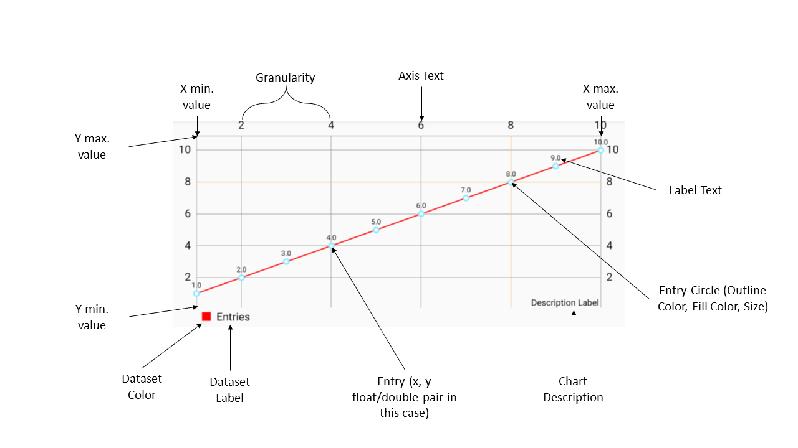
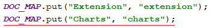
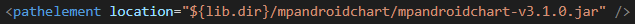
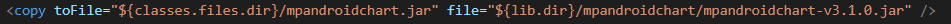
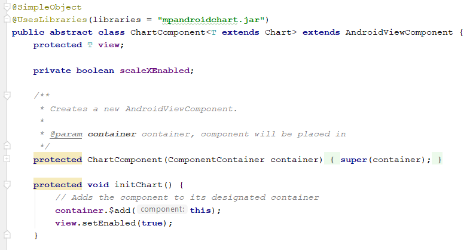
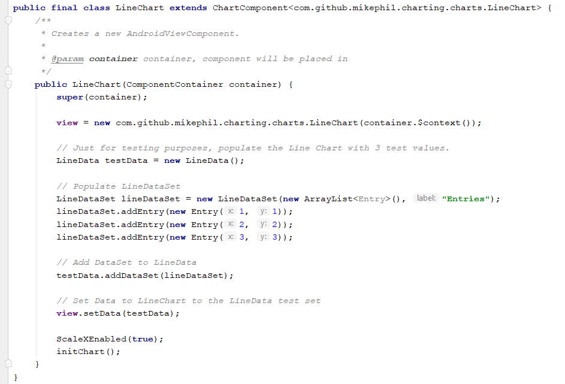
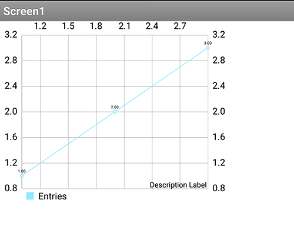

General
Personal Details
Name: Evaldas Latoškinas
Nationality: Lithuanian
Location: Delft, Netherlands
University: Delft University of Technology
Programme of Study: BSc Computer Science & Engineering (First Year)
E-mail: evaldasl61@gmail.com
CV Website: https://lightingft.github.io/
GitHub: https://github.com/lightingft
Google Play Releases: https://play.google.com/store/apps/developer?id=Enlighten+Works
Interest in App Inventor
One of the main reasons why I’m interested in working with App Inventor is that I truly love the idea of accessible Android development for everyone and would like to contribute to the project to make it even better. Moreover, the work involved covers my main areas of interest - Software Engineering, Java & Android development.
Proposed Summer Project
Introduction
My main interest in working for the App Inventor project revolves around the Component projects. The projects that I am interested in (in order) are:
I am well aware that the project that I would be working on could potentially change, regardless, I would like to provide a short summary on how I would approach each project of interest. For my proposed project, which is Visualisation Components, I will be more thorough with the details in the following section.
Visualisation Component
Plan
For this project, I propose to use the MPAndroidChart library, since it is well documented, provides a variety of useful features and extensive customization, a lot of different chart types and is easy to use without the need for much setup. In fact, I have used this library in one of my previous projects (see FinBuddy) and would very much lean towards using it again.
Since this is my main project of interest, I have included a Timeline section dedicated for the project. Moreover, in a later sub-section, I have included mockups and code examples to demonstrate how I would approach the project. In terms of workflow, my plan for the project would be:
- Install the MPAndroidChart dependency to the build
- Create an abstract class ChartComponent which extends from AndroidViewComponent for charts (since charts share a lot of common attributes, events and methods). Since all of the charts have their own counterparts (such as LineDataSet for the DataSet of the LineChart), I will most likely go with making the ChartComponent abstract class a generic class, so we can pass in the class type per chart.
- Model a UML diagram for the abstract ChartComponent, which will include all the base functionality (relevant attributes and methods). For instance, every chart has a Legend, DataSet, XAxis, YAxis, Colors, ValueFormatter, AxisValueFormatter and various style settings, therefore it's better to add these properties to the abstract base class itself. Moreover, each Chart will have an addEntry method and methods for datasets, therefore there should be at least an abstract definition of the methods in this base class.
- Model concrete Chart Classes in the UML diagram. There may be some additional properties and methods for concrete charts, for instance showing slice labels as percentage rather than as values in Pie Charts. Moreover, while modelling the concrete charts, additional intermediate abstract classes might be needed to reduce code redundancy, since some charts (e.g. Line Chart & Bar Chart) are very similar, while others differ significantly in terms of entries (e.g. Candle Stick Chart)
- Moving on to the implementation, after the UML diagram is fully established, I can then proceed with implementing the actual attributes and relevant functions (e.g. adding entry) with annotations for each chart, starting with the abstract ChartComponent base class. This and the next step will of course follow the UML diagram very closely.
- After ChartComponent is done, I will then proceed with concrete chart implementations. I plan to implement every chart that is available in the MPAndroidChart library, and for each chart, I will make a separate class that extends the abstract ChartComponent class. The components will then be put under a new category "Charts". In the end, the following classes for concrete implementations will be present: LineChart, BarChart, PieChart, ScatterChart, BubbleChart, RadarChart, CandleStickChart. (each one is shown in a following section).
- After we are done with the attributes, events are needed for added functionality to the charts. Fortunately, MPAndroidChart provides various Gestures and an OnGestureListener which works via callbacks and MotionEvents. The gestures include the typical Android view events (long-press, tap, double-tap, touch up, touch down) plus a few extra ones related to the charts (zoom, drag). In general, these apply to every chart and the functionality will go to ChartComponent.
- [OPTIONAL] Write unit tests for each Chart component (potentially making use of mocking libraries). As this is part of another App Inventor project, I consider this optional, and this depends largely on the decisions I would accept with my mentor(s). However, in any case, I will make sure to test the Chart Components as thoroughly as possible.
- Create an abstract class MockChartComponent that extends from MockVisibleComponent and add the relevant logic to handle value changes in the Designer view.
- For each concrete chart class, create a class for the Mock Component that extends from MockChartComponent. After this step and after loading the charts in SimpleComponentDescriptor, we will be able to visually see the chart in the Designer view, as well as the changes that are applied to the chart in Designer.
- Test each component in different browsers (just to be sure it works)
- Write the corresponding documentation for each Chart component, possibly under a new page for the Charts category.
- [BONUS] MPAndroidChart provides the ability to construct Custom Markers when clicked on an entry on a Chart. This can be well put to use in this project to allow even more customization to the charts or have some sort of standard for the markers. Therefore, I propose this as a bonus feature for the project. See link for reference.
File Paths
- Chart Component classes: components/src/com/google/appinventor/components/runtime
- Chart Component documentation: docs/reference/components
- Mock Chart Component classes: appengine/src/com/google/appinventor/client/editor/simple/components
- Versioning entries: blocklyeditor/src/versioning.js
- Current version tracking: components/src/com/google/appinventor/components/common/YaVersion.java
- Component categories: components/src/com/google/appinventor/components/common/ComponentCategory.java
- Mock Chart Component Loading in editor: appengine/src/com/google/appinventor/client/editor/simple/palette/SimpleComponentDescriptor.java
- Adding library to build: buildserver/build.xml (BuildServer) and components/build.xml (For AppInventor itself)
- Libraries folder: lib/
Mockups & Code Examples
Chart Propertiess

UML mockup of how the inheritance chain would look like. A lot of details omitted for brevity.
{kind=link}
Chart Properties Visualized
Adding chart components
Preview code to add new component
Add version entries to versioning.js and YaVersion.java for the Line Chart component

Add new component category for Charts in ComponentCategory.java. The changes are done on the ComponentCategory enum and the DOC_MAP Map respectively.
Create new class ChartComponent.java. For now, this is just a sample component, therefore the view is TextLabel and is instantiated as such. In the next steps, the view would of course be changed to an abstract Chart object or a generic type. (NOTE: I made a mistake in this snippet. The class should be abstract rather than a regular class)
Create new class LineChart.java. For now, this is simply an implementation class of the ChartComponent. This will be filled with the appropriate instantiation and functionality later on. The iconName and description would be changed accordingly as well. (NOTE: I forgot a few things in this snippet. The constructor should be public, and the class should be final)
Add mock component instantiation in SimpleComponentDescriptor.java so that we can get a visible mock component in the editor. With this, we assume that a MockLineChart class exists with the required type. For now, in my example code, I have made the MockLineChart component simply a copy of the MockLabel class.
After running the ant build, we can see that the component has indeed been added under the Charts category.
Adding properties, events and functions
Preview code to add properties, events and functions
In ChartComponent.java, define a new private boolean field named scaleXEnabled. Write set and get property methods, add required annotations for the getters and setters to distinguish the methods as property getters & setters in App Inventor.
After running the ant build, we can see that the properties have been successfully added to the chart component and are visible in the LineChart component blocks.
In ChartComponent.java, add new method that simply dispatches an event called "SingleTap". Add required annotation to mark the method as a SimpleEvent. To trigger the event, the method SingleTap() has to be called (ideally in the onSingleTap listener for the case of MPAndroidChart)
After running the ant build, we can see that the event is now accessible among the blocks for the LineChart.
In ChartComponent.java, add new method that takes in two arguments and adds an entry to the chart based on those arguments. Add required annotation to mark the method as a SimpleFunction that can be accessed among the Chart blocks.
After running the ant build, we can see that the proper function is now accessible.
MPAndroidChart Charts
Line Chart example with 3 data sets
Bar Chart example
Pie Chart example
Scatter Chart example
Bubble Chart example
Radar Chart example
Candle Stick Chart example
Adding Charts to Build & Making First Chart Work
Preview code to add a fully working chart view to AppInventor
ChartTest.aia (works on my chart-test branch)
Firstly, to actually get the MPAndroidChart library to work, the .jar has to be added. After downloading the MPAndroidChart library .jar, it is added to "lib\mpandroidchart\"


The relevant lines need to be added in buildserver/build.xml and components/build.xml for the library classes to be found and compiled. See preview code link at the beginning of this subsection for more details.

The ChartComponent class is refactored from the previous subsection. The class itself is made abstract, and a generic class that extends the MPAndroidChart abstract Chart generic (to indicate that T must be of type Chart). The view is then made to be of type T and non-final & protected (since it will be instantiated in the implementation classes), and a new protected method initChart() is added that will take care of initializing common functionality for Chart implementations.

The LineChart also has to be refactored a bit. It is made final, since no other classes will extend from the LineChart. Moreover, the constructor is made public, so that it can be instantiated for applications. The view is initialized to be the LineChart object that is part of the added MPAndroidChart library. At the end of the constructor code, initChart() is called, which is part of the abstract ChartComponent class. Here I have also included code to load test data for demonstration purposes.

After running the ant build, and making an example application in the build of AppInventor and building the application, we can indeed see that the Line Chart component works as expected.
Menu Options
Plan
General summary of the plan for the adding Menu Options project:
- Create new component MenuOptions that extends the AndroidNonvisibleComponent class. This could then be put under the UserInterface category.
- Create getters and setters for the property "Menu Elements" which would represent all user defined Menu Elements.
- Write additional code in the component itself to handle adding the Menu Elements into the context menu and attaching listeners to them. Moreover, the two default options should still remain in the list regardless of user settings (in my opinion), and right now I would aim towards keeping them at the end of the list (after the User defined options)
- For the current two default options (About Application and Stop Application), I believe they should be added after all the user-defined options have been added. Additionally, the Menu Options component could have two additional Boolean properties to toggle the two menu options in the list.
- Make all menu options use the same listener, but make the event return a certain value (either Menu entry name or index) through dispatchEvent.
- Write an event for the listener, which would have one attribute - the value returned by the callback (Menu entry name/index)
- Additional alterations to Form.java might be needed, since two menu options are added in that class. Possibly step 3 & 4 might need to be done in Form.java instead.
- Thoroughly test the component.
- Write documentation for the component.
File Paths
- Menu Options Component class: components\src\com\google\appinventor\components\runtime
- Menu Options Component documentation: docs\reference\components
- Form.java potential changes: components\src\com\google\appinventor\components\runtime\Form.java
Improvements in ListView
Plan
General summary of the plan for the making Improvements in ListView project:
- Identify all required extensions and improvements to list view to get the general idea of the features to implement
- Create a custom adapter for the list view that can be extended with the needed features (such as adding icons and pictures)
- Right now I would consider perhaps having one list for images and one for text, so that each adapter entry would have both an Image and a String. In the case where one of them is not present, it is simply not displayed (set to View.GONE)
- Add additional properties for the new features (e.g. Pictures list attribute for icons/pictures)
- Write documentation for the new features
File Paths
- ListView Component class: components\src\com\google\appinventor\components\runtime\ListView.java
- ListView Component documentation: docs\reference\components\userinterface.html
Timeline
Provided that I work on the Visualisation Component project, I would structure my time as follows:
Community Bonding
- Acquaint myself very well with the mentor(s) and the community
- Decide on communication methods to be used throughout the project
- Properly scope and decide on the project with the mentor(s). One of the very important parts of this point is to decide on how intricate should the charts be in general, in terms of the properties, for instance, such that it would be highly user friendly and not confuse new users.
- Finish planning the timeline for the project (namely last 5 weeks of the project)
- After the planning is fully done and the project is well scoped, analyse subproblems for the project to get an excellent head start to prepare for the actual coding period.
- Analyse relevant parts of the codebase deeper to get a better understanding (highly dependent on the project scoping)
Week 1
- Setup a test environment repository to test various chart functionality to make decisions for the App Inventor
- Create a branch that branches from UCR, and add the MPAndroidChart dependency to the build
- Create & finalize the UML diagram while also discussing it with the mentor(s)
- Create the abstract ChartComponent class with all (or at least most) of the necessary chart properties
- Create a LineChart implementation to be actually able to test the abstract ChartCompoent class. For now, this will only be used mainly for testing and not have the full implementation
- Test & Document the work
Week 2-3
- Finish implementing all properties for the abstract ChartComponent class
- Implement all events for the abstract ChartComponent class
- Implement all functionality for the abstract ChartComponent class (e.g. AxisValueFormatter)
- Finish LineChart class to include all properties and necessary functionality
- Fully implement the BarChart class with all properties
- Fully implement the PieChart class with all properties
- Test & Document the work
Week 4-5
- Fully implement the ScatterChart with all the properties
- Fully implement the BubbleChart with all the properties
- Fully implement the RadarChart with all the properties
- Fully implement the CandleStickChart with all the properties
- Test & Document the work
Week 6
- Create an abstract MockChartComponent class
- Implement required base functionality in the MockChartComponent class so that changes are reflected in the Designer window.
- Create ChartComponent extensions from the MockChartComoponent class
- Create the implementations for each MockChartComponent that will visualize the chart well in the Scene Builder
- Test & Document the work
Week 7-12
- Final tests on the ChartComponents
- Final documentation, including design document/final report
- Relevant version upgrading (such as in versioning.js and YaVersion.java)
- Other minor changes (such as setup the Chart messages to work with translations)
- [BONUS] Potentially work on the proposed Marker implementation
- Deployment
- Workload for mid Week 7 up to Week 12 to be discussed with mentor at beginning of project (so this project can be further well scoped). In general, I am mainly interested in working further with components (the chart component, Menu Options, Improvement in ListView, or any others). However, I would also be interested in any other work related to Blocks.
Personal Commitments
Unfortunately, there will be two periods of time where I will be absent:
- June 28-July 2 - final exam period (partial absence)
- July 8-15 or July 12-19 (one of these weeks) - pre-planned vacation (total absence)
However, I believe this should not be a large issue, since I will easily be able to compensate for the lost days. Generally, until July, I will be able to work 30-40 hours a week on the project (no more due to university). However, as soon as my final exams end, I would easily be able to work 40-45 hours consistently on a weekly basis.
Interest In Introductory Programming
Throughout university and high school, I have actively helped my fellow peers learn and understand Computer Science concepts & topics better by explaining them in depth and providing my own examples. Subjects I have helped my peers in include:
- Android layout coding via XML
- OOP Project (Java Application)
- Object-Oriented Programming (in Java)
- Algorithms & Data Structures (algorithmic problems in Java)
- Web & Database Technology (JavaScript)
- Computer Organization (Assembly)
Experience with Development Tools
Android SDK
I have gained an extensive understanding of the Android SDK throughout developing Android applications for personal projects. One of my major Android application releases is FinBuddy, which is a finance manager application that is released on Google Play, and done in collaboration with 3 other students. The application itself involved the following Android related programming work:
- Extending base Android view functionality, such as implementing a custom spinner with icons to adapt to the needs of the application
- Implementing a custom side navigation menu, which has options that leads the User to the right screen or opens the required menu
- Extending the functionality of the standard action bar by adding additional buttons and dynamically changing the title
- Making use of a 3rd party Calendar library (Caldroid) to build the main interface of the calendar in the application. This also involved writing additional code to extend the Calendar to the personal needs of the project. The extra functionality, for instance, is displaying the amount of money spent/earned in one day on the Calendar cells.
- Implementing charts to display statistics about the user's expenses and savings. This has been done using the MPAndroidChart library.
- Implementing other 3rd party libraries to achieve various functionality, such as advertisements and an image gallery.
- Creation and utilizing of a SQLite database to store the user's data and being able to read and update it efficiently
- Writing the logic for the application itself (events, goals, tasks, recurring events, total expense/income calculation, etc.)
- Input validation of the text input fields (involved regexp, such as disallowing to input "." as a numeric value, or allowing to input at most 2 numbers after the decimal point)
- Working with various Android events (mainly OnClickListeners for Buttons and OnValueChangeListeners for EditText)
- Creating custom alert dialogs with icons for various scenarios (including alert dialogs which require user input)
- Implementing in-app purchases using Google Play In-App Billing
Alongside this, I have also made an Android business simulation game application for a high school project together with two fellow students (see Experience with Teams for more information and the report that we made)
Java
Alongside Android Development, I have quite an extensive comprehension of Java due to the large focus of the language in my University. So far, three courses involved extensive coding in Java - Object-Oriented Programming, Algorithms & Data Structures, OOP Project. In the first two courses, I was mainly writing small programs that involved solving a specific task, such as finding the shortest path to a location using Dijkstra's algorithm, or writing a command line application that allows building a catalog of Objects (e.g. of cars) dynamically by user input and then storing the data locally. The OOP Project involved:
- Various logic code to filter smaller subsets of data from collections in accordance to user preferences.
- Writing custom extensions of Java classes (such as custom comparables for sorting)
- Server code to connect to a MongoDB database with the help of the Spring framework.
- Database queries in Java with the help of the Spring Boot library. An example of a query I have written is one that uses regex to retrieve usernames matching the text query specified by the user.
- Utilizing the DAO design pattern for data access within the server code.
- Making the database accessible via a REST controller.
- Encrypted password storage in the database.
- pom.xml maintenance, deploying server to remote location (Heroku), setting up GitLab CI to compile the project, run the tests, force CheckStyle and 90% test coverage, and create artifacts for both CheckStyle & test results.
- Unit testing for server independent parts of the code.
- Integration & Mock Tests for server functionality testing.
JavaDoc
During my studies, we were always required to write JavaDoc for the OOP & OOP Project courses. As such, I have developed a good habit of always writing JavaDoc for my Java code, despite whether I'm working alone on the project, or with someone else. As such, I am familiar with the format of JavaDoc, some of the available annotations (@return, @param, @author, @exception) as well as the general practices of JavaDoc.
Git & GitHub
Throughout my course work and several individual projects that I have worked on, I have chosen to and was obliged to use Git. For the Web & Database Course, I was extensively using and learning Git as a newcomer for roughly 2 months, and have been able to become quite familiar with it. I have then extended my knowledge by applying it to personal projects (a few uploaded repositories, two personal websites, two example projects). Moreover, I have been able to extend my knowledge even further with somewhat more advanced knowledge (CI, feature branching, Git Flow branching strategy, branch protection, code reviewing, head detaching, commit rebasing, resetting, checkout) through the OOP Project course, which is done in GitLab and is now ongoing for roughly 2 months. In addition, the guidance of the community throughout my App Inventor contributions has also greatly assisted me in understanding some more advanced concepts of Git (understanding checkout and rebase further)
JUnit
Due to coursework demands, I have been able to become strongly familiar with automated testing, and in general, JUnit. Apart from general unit testing, "bad weather behaviour" testing practices and edge case testing, I have also managed to gain a lot of knowledge in mock testing (using Mockito and PowerMock) and integration testing, specifically for RESTful applications (REST controllers, Requests, database access related code). Moreover, as one of the course requirements, I have managed to set up GitLab CI that uses JaCoCo to check for a certain test coverage (which uses JUnit tests), as well as display the test outcomes in Pull Requests. This has also assisted me in familiarizing myself with the knowledge of the testing workflow. Although I have been using JUnit consistently for around 6 months now for coursework, I believe I still have a lot to learn in terms of testing.
JavaScript
PixelChess (Heroku) (pairs players automatically upon clicking Play. Can be played by one person by opening two browser windows)
Learned JavaScript in university as part of the Web & Database Technology course. I have built a Chess web application powered by Node.js (on the server) and JavaScript (on the client) in collaboration with another student. The project itself involved writing the entire Chess logic from scratch both on the client and the server. We have fully implemented the majority of chess rules, including movement, invalid move checking, checkmating, converting a Pawn after it reaches the other side of the board and board rotation depending on the Player's piece colour. Visually, we have written the entire HTML from scratch and styled it with CSS, while also providing various functionality with client-side JavaScript (e.g. blinking tile in red when invalid move is made). We kept some logic on the server-side, such as pairing players for matches, returning responses for certain actions (such as end of match, move validity, etc.). Outside of this project, I have also written small amounts of JavaScript code to perform small tasks (e.g. highlight anchor links in this proposal page, initialize & load the navigation bar on my personal website)
Other Experience
Although not relevant skills to the project, this experience heavily contributes to my understanding of the technologies involved in App Inventor as well as the general understanding of programming:
- Sphere Archer game project (C#, Unity3D)
- Virtual Poker Chips Android application (C#, Unity3D)
- Text Based RPG written in Assembly
- C++ extensive experience (programming contests, high school, self-studying)
Experience with Teams
Note: Some of these projects were explained more in depth in the Experience with Development Tools section, therefore the project ideas are only presented very briefly in this section.
OOP Project
Status: Ongoing
Team size: 7 people
Duration: 2.5 months
Ongoing university project in GitLab as part of the Object Oriented Programming Project course. The project goal is to build a fully functional Java online social network application that allows users to track the amount of CO2 they have saved which can be achieved by logging certain environmentally friendly activities. The work in the team is done by following Agile development principles and planned by Scrum planning.
My role in the team is mainly working on the database part of the backend of the application, some parts of the application logic (such as filtering data on the front end) as well as handling most of the technical parts of the project (setting up CI, deploying the application to a remote host, etc.) The project in general has been very successful, as we have successfully been able to learn and adapt Agile development principles and as a result efficiently distribute our workflow, discuss changes and new features, as well as plan our work appropriately. We have also effectively managed to sort out the problems we had during the project. Moreover, we have effectively coordinated our efforts (partly thanks to CI) to achieve a well maintained, near-100% test covered, Checkstyle error-free codebase.
PixelChess
Status: Released
Team size: 7 people
Duration: 5 weeks
Done as part of the Web & Database Technology course. The project goal was to build a fully functional board game multiplayer Node.js web application. For this project, I have worked in collaboration with one other person. Since we were only 2 people, all of our work and discussions were done in person. However, we have made use of GitHub for version control and an efficient workflow. In general, despite the major issues we had with Git as newcomers, we have successfully been able to finish the project and learn how to use Git efficiently.
FinBuddy
Status: Released
Team size: 4 people
Duration: 7 months
I have worked together with 3 other people during the last year of my high school on an Android application. The goal was to create an application that allows the user to track their expenses and income, while also providing various useful functionality that helps them do so - such as charts, recurring events, and goals.
Although my collaborators did not code (I was responsible for all the programming work), they have participated in coming up with ideas, designing the application, suggesting various new features and modifications to the application. Therefore, communication was a crucial aspect of this project, and I have been able to successfully satisfy each request and work closely with my teammates. The end result is a fully functioning Android application that is released on Google Play.
Business Guy
Status: Finished & Documented
Team size: 3 people
Duration: 8 months
I have worked together with 2 fellow students in building an Android application from scratch. The general intention was to learn Android application development and write a report on the work done.
We were all beginners in Android and Java development then, and I took the role as the lead programmer. I was able to successfully carry out requests and communicate on mutual changes with my group mates, and we have successfully managed to cooperate and combine our work that we have done into one project. It was also generally a very good mutual learning experience, as we all became acquainted with Android development, and for me, this was a really good head start into Android development. Moreover, I have successfully been able to teach my teammates how to build Android layouts in XML.
We have made an extensive documentation and presentation slides for the application. The presentation slides were generally intended for a general audience with minimal knowledge of programming, while the report was intended for our mentoring IT teacher. Unfortunately, it was all written in the Lithuanian language, but I think this gives a good impression of my involvement in Android development at a young age (this was done roughly 2-3 years ago):
Business Guy Presentation Slides
AppInventor Contributions
The first and currently only open source project that I've worked with. I have been able to successfully make contributions and discuss potential solutions with the community as well as apply needed changes per review.
App Inventor Apps
Live Weather
API-based map app that shows the current weather in a selected location.
Currency Calculator
API-based currency converter tool.